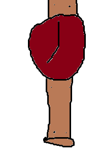

Juneteenth

Two facts about Juneteenth:
- Fact 1: makers crafted watches not only for telling time but as a symbol of something personal.
- Fact 2: When we pass down timepieces from generation to generation, they often become family heirlooms.
Credits:
- Image created by Ben Cave